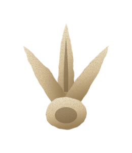
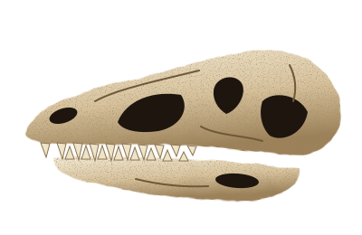
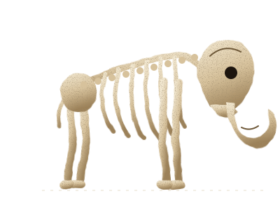
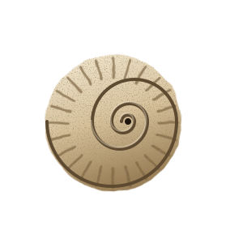
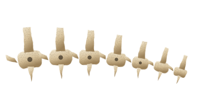

Inteira
R$40
Acesso a todas as galerias e ao laboratório aberto.
Exposição: 900 – 1800
Ossos que contam a história da Terra
Planeje sua visitaPaleontologia · desde 1966
O Museu Paleo reúne mais de 12 mil fósseis de dinossauros, mamutes e criaturas dos mares antigos. Aqui, cada fêmur, crânio e vértebra é uma pista: o que restou de animais que viveram há milhões de anos — e que ainda tem muito a dizer.
Caminhe entre esqueletos montados osso a osso, acompanhe pelo vidro o trabalho dos paleontólogos e descubra como uma pedra vira história.
Guia de horários
Funcionamos de terça a domingo. A última entrada é sempre uma hora antes do fechamento — reserve cerca de duas horas para ver tudo com calma.
Valores
Todos os ingressos dão acesso às três galerias permanentes e ao laboratório aberto.
R$40
Acesso a todas as galerias e ao laboratório aberto.
R$20
Estudantes, professores, idosos e PcD, com documento.
R$95
2 adultos + até 2 crianças, com uma atividade Kids inclusa.
R$15
Crianças até 2 anos não pagam.
Paleo Kids
Uma área inteira para brincar, ouvir histórias e colocar a mão na massa — ou melhor, na areia.
Pincel, pá e muita areia: os pequenos desenterram réplicas de ossos como paleontólogos de verdade.
Aos domingos, contadores levam a turma numa viagem até o Cretáceo — com sons, sombras e fantoches.
Cada criança faz o molde de uma pegada de dinossauro em gesso e leva para casa.

Você sabia?
O fêmur de um Tiranossauro podia passar de 1,30 m — maior que muitas crianças de 8 anos!
Interesses
Os destaques das nossas galerias. A coleção completa está na página de exposições.

Frente a frente com o crânio do maior predador terrestre e a garra que inspirou lendas.

Um mamute-lanoso montado osso a osso, com presas de quase quatro metros.

Amonites, trilobitas e peixes de 500 milhões de anos, quando tudo ainda era oceano.

Pelo vidro, veja nossos paleontólogos limpando e montando ossos recém-chegados de campo.